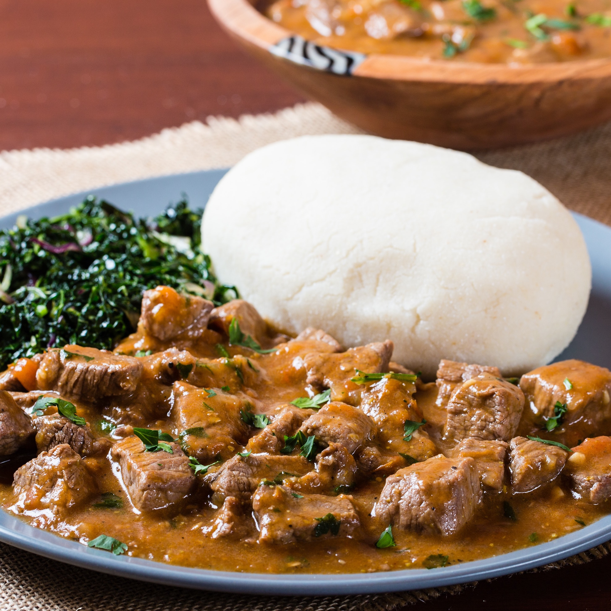

Home
Kenyan Beef Curry

An image of some tasty Kenyan Beef Curry
Ingredients
- 4 cups of water
- 2 pounds sirloin steak tips, cut into bite-size pieces (sirloin steak tips are a great choice for dishes like this, where the meat will have the opportunity to stew and soften in the flavorful liquid base but doesn’t require many hours of cooking like cubed chuck or stew meat)
- 4 cloves garlic, minced
- 2 teaspoons ground ginger
- 2 tablespoons cooking oil
- 2 medium red onions (about 1 pound), finely diced
- 4 medium tomatoes (about 1 pound), diced
- 2 tablespoons paprika
- 1/2 teaspoon black pepper or to taste
- 2 teaspoons curry powder – mild, medium, or spicy – it’s up to you!
- 4 tablespoons tomato paste
- Salt to taste
- Fresh cilantro leaves for garnish
Steps
- Bring the 4 cups of water to a boil in a Dutch oven or soup pot. Add the beef, garlic, and ginger, and stir well. Bring to a gentle simmer, cover, and cook, stirring occasionally, for 20 minutes. If you get any foamy scum on the top, not to worry, simply spoon it away or stir it back in.
- Remove from the heat, and drain, but reserve the excess water for later.
- Return the pot or Dutch oven to medium heat with the 2 tablespoons of cooking oil. Once the oil is shimmering, add the onions and cook, stirring occasionally, until softened, 5 to 7 minutes.
- Add the tomatoes to the onions, and continue cooking, stirring occasionally, until the tomatoes are falling apart, 3 to 5 minutes.
- Add the drained beef to the tomato and onion mixture, and stir well. Continue cooking over medium heat for 5 minutes, stirring occasionally.
- Add the paprika, pepper, curry powder, tomato paste, and salt to taste, and stir well.
- Add back the excess water that was used for cooking the beef, along with enough extra water to cover. Bring to a boil, reduce heat, and simmer, uncovered, stirring occasionally, for about 1 hour, or until the meat is tender and the sauce is thickened. Add additional water if your beef curry begins to dry and stick, or if would like your curry to have more of a soupy consistency.
- When the beef curry is ready, remove from the heat, give it a taste, and adjust the seasonings as desired. Garnish with fresh chilies and cilantro.